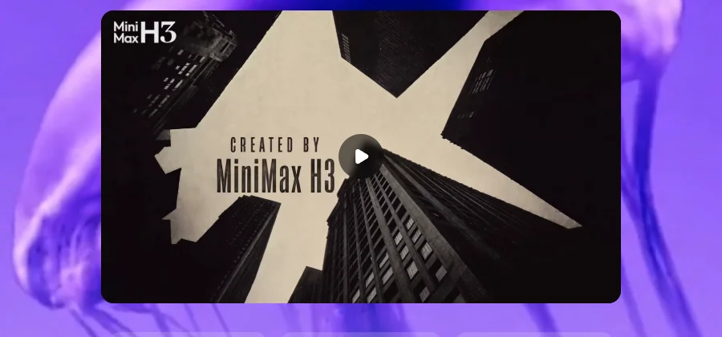

MiniMax上海稀宇科技（港交所上市）
多模态与出海最突出的国产厂商：文本、视频、语音、音乐模型全部自研并大量开放权重，七成以上收入来自海外；2026 年 1 月港股上市，上半年收入增长 283%，但研发投入约为收入的 2.5 倍、仍在亏损。
一页结论
- 收入高增、结构转向开放平台：上半年收入 1.166 亿美元、同比 +283%；开放平台及企业服务 7,390 万美元（+703%），占 63.4%，AI 原生产品 4,260 万美元（+101%）S3
- 全球化最彻底：2025 年七成以上收入来自海外S4
- 全模态并开放：文本 M3 / M3.1-Flash、视频 H3、音乐 Music 3.0 都开放权重，H3 在 Hugging Face 下载约 592 万次S2S5
- 价格极低：M3.1-Flash 输入 $0.15 / 输出 $0.6；M3 永久 5 折后输入 $0.3 / 输出 $1.2S1
- 亏损仍重、股价大幅回落：上半年净亏损 3.58 亿美元，毛利率 17.9%；市值从 3 月高点约 4,300 亿港元回落至约 1,000 亿港元S3S4
01公司介绍
02公司战略
MiniMax 的打法是“全模态自研 + 开放权重 + 海外市场优先”。
- 全模态：文本、视频、语音、音乐、图像都有自研模型S7
- 开放权重：主力文本、视频、音乐模型都可下载并自托管S2S7
- 海外优先：七成以上收入来自国际市场S4
- 从应用转向平台：开放平台收入增速远超 AI 原生产品，成为第一大收入来源S3
- Agent 产品：MiniMax Code、Design 与通用 Agent，10 月推出 Code 小程序S5
03模型矩阵与定位
| 模型 | 定位 | 价格 | 说明 |
|---|---|---|---|
| MiniMax-M3.1-Flash | 前沿多模态编程模型 | 输入 $0.15 / 输出 $0.60 | 100 万上下文，可调思考深度；2026-10-19 发布S1S8 |
| MiniMax-M3 | 前沿多模态编程模型 | ≤51.2 万 token：$0.30 / $1.20（永久 5 折后） | 100 万上下文；更长输入 $0.60 / $2.40S1S8 |
| MiniMax-H3 / H3-Max | 开放的通用多模态视频模型 | 按视频计费 | 2026-07-31 发布S8S5 |
| Hailuo 2.3 | 文生视频、图生视频 | 按视频计费 | S8 |
| Speech 2.8 | 语音合成与克隆 | 按字符计费 | S8 |
| Music 3.0 | 开放权重音乐模型 | — | 2026-08-13 发布S5 |
文本价格单位：美元 / 百万 token。M2.5 / M2.7 将于 2026-11-18 退役，订阅用户自动切换到 M3.1-FlashS8。

04产品与 Agent 布局
应用层
通用 AgentMiniMax Code（含小程序）MiniMax Design海螺 AI（视频）
开发者平台
开放平台 API（兼容 Anthropic SDK）M Plan / Token Plan 订阅音频、视频套餐MCP 工具
模型层
M3.1-Flash / M3（文本）H3 / Hailuo 2.3（视频）Speech 2.8（语音）Music 3.0（音乐）
部署
官方云端 API自托管开放模型（SGLang 等）
渠道海外开发者与企业Hugging Face国内开放平台
05开放权重
| 模型 | 发布 | Hugging Face 下载 |
|---|---|---|
| MiniMax-H3（视频） | 2026-07-28 | 约 592 万 |
| MiniMax-M2.5 | 2026-02-12 | 约 136 万 |
| MiniMax-M2.7 | 2026-04-09 | 约 34 万 |
| MiniMax-M3 | 2026-06-02 | 约 20 万 |
| MiniMax-M3.1-Flash | 2026-10-17 | 约 2 万 |
| MiniMax-Music3 | 2026-08-07 | 约 6 千 |
下载量为调研日数据S2。
06商业模式
盈利能力：毛利率 17.9%；研发开支 2.97 亿美元，约为收入的 2.5 倍；经调整净亏损 2.93 亿美元，同比扩大 111%S3S4。
07上下游与渠道
上游：算力
云算力（公司未公开详细供应商）
MiniMax
全模态模型、开放平台、AI 原生产品
渠道
海外开放平台与应用国内开放平台Hugging Face 开放权重
生态伙伴
兼容 Anthropic SDK，可接入主流编程 AgentS7
下游客户
海外开发者、创作者与企业（收入七成以上）S4
08用户与收入
09开发者口碑
10安全合规
11近期动态
12潜在风险分析意见
| 风险 | 表现 | 可能程度 |
|---|---|---|
| 亏损与现金消耗 | 研发约为收入 2.5 倍，经调整亏损扩大S3 | 高 |
| 毛利率低 | 毛利率 17.9%S3 | 中 |
| 海外合规 | 七成收入在海外，受地缘与数据政策影响大（分析意见） | 中 |
| 股价波动 | 市值较高点回落约四分之三S4 | 中 |
“可能程度”为基于现有公开信息的判断，不是量化预测。
13综合结论分析意见
优势
- 全模态自研
- 海外收入占比最高
- 开放权重与低价
劣势
- 亏损重、毛利率低
- 规模小于头部厂商
机会
- 视频与语音的全球创作者市场
- A 股上市
威胁
- 海外合规
- 国内外大厂的多模态竞争
对 AI 产品团队的启示
- 多模态是出海的差异化：视频、语音、音乐比文本更容易跨越语言与文化障碍。
- 开放平台比自有应用更易放量：开放平台收入增长 7 倍，远快于 AI 原生产品。
- 低价要有成本支撑：毛利率 17.9% 说明价格战下的利润空间非常有限。
- 上市后要直面盈利拷问：市值大幅回落反映市场对研发投入回报的担忧。
信息缺口
以下信息未找到可靠的公开来源，本报告不做推测。
- 海螺 AI 等 AI 原生产品的用户数
- 海外各地区的收入构成
- 算力供应商与成本
- A 股上市进度
来源
A 官方 · B 权威媒体或第三方 · C 社区（仅用于口碑与线索）。访问日期均为 2026-11-02。
- S1 · APricing OverviewMiniMax 开放平台
- S2 · AMiniMaxAI on Hugging FaceHugging Face
- S3 · AMiniMax 发布 2026 年中期业绩美通社（公司公告） · 2026-08-26
- S4 · BMiniMax 市值五个月蒸发 76%：上半年营收增 283% 但经调整净亏损扩大 111.2%虎嗅 · 2026-08
- S5 · AMiniMax 官网MiniMax
- S6 · B市值超 2600 亿港元！MiniMax 再冲 A 股财联社 · 2026
- S7 · AMiniMax 开发者文档索引MiniMax 开放平台
- S8 · AModel ListMiniMax 开放平台
- S9 · BAnthropic（2026-02 蒸馏指控）Wikipedia